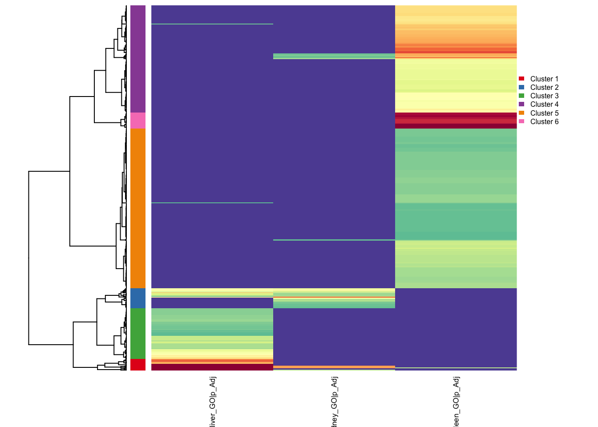
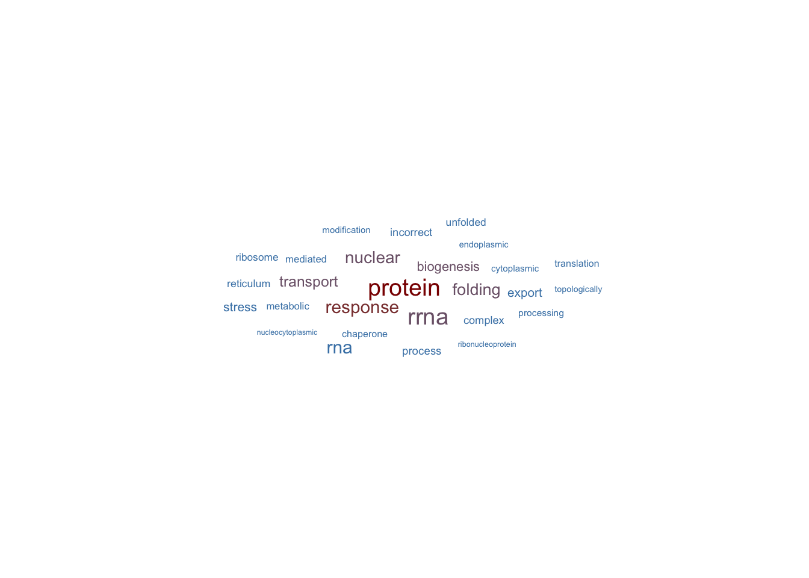

library(dplyr)
library(tibble)
library(ggplot2)
library(org.Hs.eg.db)
library(gt)
library(EnrichGT)
library(readr)
fulllist <- readRDS("./cprreactorFile.rds")
ora_result_g1 <- fulllist[[1]]
ora_result_g2 <- fulllist[[2]]
ora_result_g3 <- fulllist[[3]]
ora_result_g4 <- fulllist[[4]]
ora_result_g5 <- fulllist[[5]]Compare Multiple Enrichment Results
Comparison Reactor User Guide
The Comparison Reactor provides a framework for comparing and analyzing enrichment results across multiple experimental groups or conditions. It supports two types of enrichment analysis: Over-Representation Analysis (ORA) and Gene Set Enrichment Analysis (GSEA).
ORA Comparison Reactor
Overview
The ORA Comparison Reactor is designed for comparing over-representation analysis results across multiple groups. It focuses on p-value and adjusted p-value based comparisons to identify shared and unique enriched terms across different experimental conditions.
Getting Started
Create an ORA comparison reactor using:
ora_reactor <- egt_comparison_reactor("ORA")Basic Workflow
1. Adding Enrichment Results
Add your ORA enrichment results from different groups one by one. Each result must be a data frame containing p-value or adjusted p-value columns.
ora_reactor$append_enriched_result(ora_result1, "control")
ora_reactor$append_enriched_result(ora_result2, "treatment_A")
ora_reactor$append_enriched_result(ora_result3, "treatment_B")Parameters: - x: Data frame of enrichment results - group: Character string naming the group
2. Reviewing Your Data
Check which groups have been added to the reactor:
ora_reactor$summarize()3. Filtering Results
Filter your results by adjusted p-value to focus on the most significant terms:
ora_reactor$prefilter_by_p_adj(0.01) # Default is 0.05Parameters: - x: Numeric cutoff for adjusted p-values (terms with p.adjust values below this threshold are retained)
4. Creating Comparison Plans
Set up the comparison framework by specifying which groups to compare and which statistical value to use:
ora_reactor$make_plans(group = c("control", "treatment_A", "treatment_B"),
use_value = "padj")Parameters: - group: Character vector of group names, or “auto” to include all groups - use_value: Either “p” (p-value) or “padj” (adjusted p-value) for comparisons
5. Finding Relationships Between Terms
Identify how enriched terms relate across your groups using hierarchical clustering:
ora_reactor$find_relationship(Num = 10,
dist_method = "euclidean",
hclust_method = "ward.D2")Parameters: - Num: Number of top terms to consider from each group - dist_method: Distance calculation method (e.g., “euclidean”, “manhattan”, “pearson”) - hclust_method: Hierarchical clustering method (e.g., “ward.D2”, “complete”, “average”) - ...: Additional parameters passed to the heatmap visualization
This method performs clustering analysis and generates a heatmap visualization showing term relationships.
6. Retrieving Relationship Data
Extract the relationship analysis results as a data frame:
relation_df <- ora_reactor$fetch_relationship()Returns: A data frame containing: - Term information - Statistical values across groups - Cluster assignments - Group presence indicators
7. Visualizing Biological Themes
Generate word clouds to visualize the dominant biological themes in each cluster:
wordclouds <- ora_reactor$fetch_biological_theme()
wordclouds[[1]] # View word cloud for cluster 1Returns: A list of ggplot2 word cloud objects, one for each cluster
8. Splitting by Cluster
Organize your results by identified clusters for focused downstream analysis:
ora_reactor$split_by_cluster()
cluster_list <- ora_reactor$get_splited_list()Returns: A list of data frames, each containing terms belonging to a specific cluster
9. Sub-clustering Analysis
Perform deeper clustering within your existing clusters to identify finer biological themes:
ora_reactor$do_recluster(ClusterNum = 5,
P.adj = 0.05,
nTop = 10,
method = "ward.D2")
recluster_results <- ora_reactor$get_recluster_result()Parameters: - ClusterNum: Number of sub-clusters to generate - P.adj: Adjusted p-value cutoff for filtering terms before reclustering - force: Whether to force reclustering even if already performed (default: FALSE) - nTop: Number of top terms to consider from each original cluster - method: Clustering method
Returns: A list containing: - Sub-cluster assignments - Updated term-cluster relationships - Sub-cluster specific visualizations
GSEA Comparison Reactor
Overview
The GSEA Comparison Reactor is specialized for comparing Gene Set Enrichment Analysis results across multiple groups. It leverages Normalized Enrichment Scores (NES) to identify gene sets with consistent or divergent enrichment patterns across conditions.
Getting Started
Create a GSEA comparison reactor using:
gsea_reactor <- egt_comparison_reactor("GSEA")Basic Workflow
1. Adding Enrichment Results
Add your GSEA enrichment results from different groups. Each result must be a data frame containing NES values and p-value columns.
gsea_reactor$append_enriched_result(gsea_result1, "condition1")
gsea_reactor$append_enriched_result(gsea_result2, "condition2")
gsea_reactor$append_enriched_result(gsea_result3, "condition3")Parameters: - x: Data frame of GSEA enrichment results - group: Character string naming the group
2. Reviewing Your Data
Check which groups have been added:
gsea_reactor$summarize()3. Filtering Results
For GSEA, you can filter by either statistical significance or enrichment strength:
Filter by adjusted p-value:
gsea_reactor$prefilter_by_p_adj(0.05)Filter by Normalized Enrichment Score:
gsea_reactor$prefilter_by_NES(1.5)Parameters: - For prefilter_by_p_adj(): Numeric cutoff for adjusted p-values - For prefilter_by_NES(): Numeric cutoff for absolute NES values (both positive and negative)
Filtering by NES is particularly useful for focusing on gene sets with strong enrichment effects, regardless of statistical significance.
4. Creating Comparison Plans
Set up the comparison framework. For GSEA, the comparison typically uses NES values:
gsea_reactor$make_plans(group = c("condition1", "condition2", "condition3"),
use_value = "NES")Parameters: - group: Character vector of group names, or “auto” to include all groups - use_value: Typically “NES” (Normalized Enrichment Score) for GSEA comparisons
5. Finding Relationships Between Gene Sets
Identify patterns of gene set enrichment across your conditions:
gsea_reactor$find_relationship(Num = 15,
dist_method = "pearson",
hclust_method = "ward.D2")Parameters: - Num: Number of top gene sets to consider from each group - dist_method: Distance calculation method; “pearson” or “spearman” often work well for NES-based comparisons - hclust_method: Hierarchical clustering method - ...: Additional parameters for heatmap visualization
This analysis reveals which gene sets show similar enrichment patterns across conditions, helping identify coordinated biological processes.
6. Retrieving Relationship Data
Extract the relationship analysis results:
relation_df <- gsea_reactor$fetch_relationship()Returns: A data frame containing: - Gene set information - NES values across groups - Cluster assignments - Enrichment direction indicators
7. Visualizing Biological Themes
Generate word clouds showing the predominant biological themes in each cluster:
wordclouds <- gsea_reactor$fetch_biological_theme()
wordclouds[[1]] # View word cloud for cluster 1Returns: A list of ggplot2 word cloud objects
For GSEA results, word clouds help summarize the biological themes represented by gene sets showing similar enrichment patterns.
8. Splitting by Cluster
Organize results by clusters for detailed examination:
gsea_reactor$split_by_cluster()
cluster_list <- gsea_reactor$get_splited_list()Returns: A list of data frames, each containing gene sets from a specific cluster
This is particularly useful for identifying gene sets that are: - Consistently enriched across all conditions - Specifically enriched in certain conditions - Showing opposite enrichment directions across conditions
9. Sub-clustering Analysis
Refine your clustering to identify subtle biological themes:
gsea_reactor$do_recluster(ClusterNum = 8,
P.adj = 0.05,
nTop = 15,
method = "complete")
recluster_results <- gsea_reactor$get_recluster_result()Parameters: - ClusterNum: Number of sub-clusters to generate - P.adj: Adjusted p-value cutoff for filtering - force: Whether to force reclustering (default: FALSE) - nTop: Number of top gene sets to consider from each original cluster - method: Clustering method
Returns: A list containing sub-cluster assignments and refined term groupings
For GSEA, sub-clustering can help separate gene sets by: - Enrichment direction (upregulated vs downregulated) - Magnitude of enrichment - Condition-specific patterns
Tips and Best Practices
For Both ORA and GSEA
Method Chaining: Most methods return the reactor object invisibly, allowing you to chain operations:
reactor$append_enriched_result(result1, "group1")$ append_enriched_result(result2, "group2")$ prefilter_by_p_adj(0.01)Filtering Strategy: Apply filtering before finding relationships to focus computational resources on significant terms
Cluster Number Selection: Start with the default clustering, examine the results, then adjust
ClusterNumin reclustering based on biological interpretation
ORA-Specific Tips
- Use “padj” rather than “p” for more robust comparisons when dealing with multiple testing
- Consider stricter p-value cutoffs (e.g., 0.01) when comparing many groups to reduce noise
GSEA-Specific Tips
- NES filtering is powerful for identifying strongly enriched gene sets; typical cutoffs range from 1.0 to 2.0
- Consider using correlation-based distance metrics (“pearson”, “spearman”) when comparing NES patterns
- Pay attention to enrichment direction; positive and negative NES values represent different biological states
Complete Example Workflows
Example
reactor1 <- egt_comparison_reactor("ora")── EnrichGT comparison reactor ─────────────────────────────────────────────────reactor1$append_enriched_result(ora_result_g1, "liver_GO")✔ Appended data into group liver_GO.reactor1$append_enriched_result(ora_result_g2, "kidney_GO")ℹ Overlap rate of new added data and the latest data:52.13%.
Please ensure there are overlaps among appended data. ✔ Appended data into group kidney_GO.reactor1$append_enriched_result(ora_result_g3, "muscle_GO")ℹ Overlap rate of new added data and the latest data:65.17%.
Please ensure there are overlaps among appended data. ✔ Appended data into group muscle_GO.reactor1$append_enriched_result(ora_result_g4, "pancreas_GO")ℹ Overlap rate of new added data and the latest data:69.76%.
Please ensure there are overlaps among appended data. ✔ Appended data into group pancreas_GO.reactor1$append_enriched_result(ora_result_g5, "spleen_GO")ℹ Overlap rate of new added data and the latest data:57.58%.
Please ensure there are overlaps among appended data. ✔ Appended data into group spleen_GO.reactor1$prefilter_by_p_adj(0.05)✔ Filter according to p adjust < 0.05reactor1$make_plans(c("liver_GO", "kidney_GO", "spleen_GO"))ℹ Successed.
If the result is strange, please remember do prefiltering by `reactor$prefilter_by...()`reactor1$find_relationship(6)ℹ Clustering with euclidean distance and ward.D2 linkage, cut into 6 clustersclusters
1 2 3 4 5 6
14 24 61 129 192 19 
✔ Suggest include: 1,2,3,4,5,6✖ Suggest exclude: figlist0 <- reactor1$fetch_biological_theme()✔ Suggest include: 1,2,3,4,5,6
✖ Suggest exclude: ℹ Will return a figure list.
Please assign to any value use `figlist <- reactor$fetch_biological_theme()`, and draw individual by printing them inside this list. figlist0[[1]]
reactor1$split_by_cluster()✔ Suggest include: 1,2,3,4,5,6✖ Suggest exclude: reactor1$do_recluster()✔ re-enrichment done.ℹ You can adjust the param of egt_recluster_analysis() for better results. Please refer to the help page. ✔ re-enrichment done.ℹ You can adjust the param of egt_recluster_analysis() for better results. Please refer to the help page. ✔ re-enrichment done.ℹ You can adjust the param of egt_recluster_analysis() for better results. Please refer to the help page. ✔ re-enrichment done.ℹ You can adjust the param of egt_recluster_analysis() for better results. Please refer to the help page. ✔ re-enrichment done.ℹ You can adjust the param of egt_recluster_analysis() for better results. Please refer to the help page. ℹ Too many clusters! Try with max as ncol/10...
use force=T to forbid the self-check✔ re-enrichment done.ℹ You can adjust the param of egt_recluster_analysis() for better results. Please refer to the help page. ✔ re-enrichment done.ℹ You can adjust the param of egt_recluster_analysis() for better results. Please refer to the help page. ✔ re-enrichment done.ℹ You can adjust the param of egt_recluster_analysis() for better results. Please refer to the help page. ✔ re-enrichment done.ℹ You can adjust the param of egt_recluster_analysis() for better results. Please refer to the help page. ✔ re-enrichment done.ℹ You can adjust the param of egt_recluster_analysis() for better results. Please refer to the help page. ✔ re-enrichment done.ℹ You can adjust the param of egt_recluster_analysis() for better results. Please refer to the help page. ✔ re-enrichment done.ℹ You can adjust the param of egt_recluster_analysis() for better results. Please refer to the help page. ℹ Too many clusters! Try with max as ncol/10...
use force=T to forbid the self-check✔ re-enrichment done.ℹ You can adjust the param of egt_recluster_analysis() for better results. Please refer to the help page. ✔ re-enrichment done.ℹ You can adjust the param of egt_recluster_analysis() for better results. Please refer to the help page. ✔ re-enrichment done.ℹ You can adjust the param of egt_recluster_analysis() for better results. Please refer to the help page. ✔ re-enrichment done.ℹ You can adjust the param of egt_recluster_analysis() for better results. Please refer to the help page. ✔ re-enrichment done.ℹ You can adjust the param of egt_recluster_analysis() for better results. Please refer to the help page. res <- reactor1$get_recluster_result()
str(res,max.level=2)List of 17
$ Data:liver_GO,Cluster:1 :Formal class 'EnrichGT_obj' [package "EnrichGT"] with 12 slots
$ Data:pancreas_GO,Cluster:1:Formal class 'EnrichGT_obj' [package "EnrichGT"] with 12 slots
$ Data:liver_GO,Cluster:2 :Formal class 'EnrichGT_obj' [package "EnrichGT"] with 12 slots
$ Data:kidney_GO,Cluster:2 :Formal class 'EnrichGT_obj' [package "EnrichGT"] with 12 slots
$ Data:pancreas_GO,Cluster:2:Formal class 'EnrichGT_obj' [package "EnrichGT"] with 12 slots
$ Data:liver_GO,Cluster:3 :Formal class 'EnrichGT_obj' [package "EnrichGT"] with 12 slots
$ Data:pancreas_GO,Cluster:3:Formal class 'EnrichGT_obj' [package "EnrichGT"] with 12 slots
$ Data:kidney_GO,Cluster:4 :Formal class 'EnrichGT_obj' [package "EnrichGT"] with 12 slots
$ Data:muscle_GO,Cluster:4 :Formal class 'EnrichGT_obj' [package "EnrichGT"] with 12 slots
$ Data:pancreas_GO,Cluster:4:Formal class 'EnrichGT_obj' [package "EnrichGT"] with 12 slots
$ Data:spleen_GO,Cluster:4 :Formal class 'EnrichGT_obj' [package "EnrichGT"] with 12 slots
$ Data:muscle_GO,Cluster:5 :Formal class 'EnrichGT_obj' [package "EnrichGT"] with 12 slots
$ Data:pancreas_GO,Cluster:5:Formal class 'EnrichGT_obj' [package "EnrichGT"] with 12 slots
$ Data:spleen_GO,Cluster:5 :Formal class 'EnrichGT_obj' [package "EnrichGT"] with 12 slots
$ Data:muscle_GO,Cluster:6 :Formal class 'EnrichGT_obj' [package "EnrichGT"] with 12 slots
$ Data:pancreas_GO,Cluster:6:Formal class 'EnrichGT_obj' [package "EnrichGT"] with 12 slots
$ Data:spleen_GO,Cluster:6 :Formal class 'EnrichGT_obj' [package "EnrichGT"] with 12 slotsORA Workflow
# Create reactor
ora_reactor <- egt_comparison_reactor("ORA")
# Add results
ora_reactor$append_enriched_result(control_ora, "control")
ora_reactor$append_enriched_result(treatment1_ora, "treatment1")
ora_reactor$append_enriched_result(treatment2_ora, "treatment2")
# Filter and compare
ora_reactor$prefilter_by_p_adj(0.01)
ora_reactor$make_plans(group = "auto", use_value = "padj")
# Analyze relationships
ora_reactor$find_relationship(Num = 10)
relation_data <- ora_reactor$fetch_relationship()
# Visualize themes
themes <- ora_reactor$fetch_biological_theme()
# Refine clustering
ora_reactor$do_recluster(ClusterNum = 6, P.adj = 0.01)
refined_results <- ora_reactor$get_recluster_result()GSEA Workflow
# Create reactor
gsea_reactor <- egt_comparison_reactor("GSEA")
# Add results
gsea_reactor$append_enriched_result(condition1_gsea, "condition1")
gsea_reactor$append_enriched_result(condition2_gsea, "condition2")
# Filter by significance and effect size
gsea_reactor$prefilter_by_p_adj(0.05)
gsea_reactor$prefilter_by_NES(1.5)
# Compare using NES
gsea_reactor$make_plans(group = "auto", use_value = "NES")
# Analyze patterns
gsea_reactor$find_relationship(Num = 20, dist_method = "pearson")
patterns <- gsea_reactor$fetch_relationship()
# Examine themes and refine
themes <- gsea_reactor$fetch_biological_theme()
gsea_reactor$do_recluster(ClusterNum = 8, nTop = 15)
refined <- gsea_reactor$get_recluster_result()